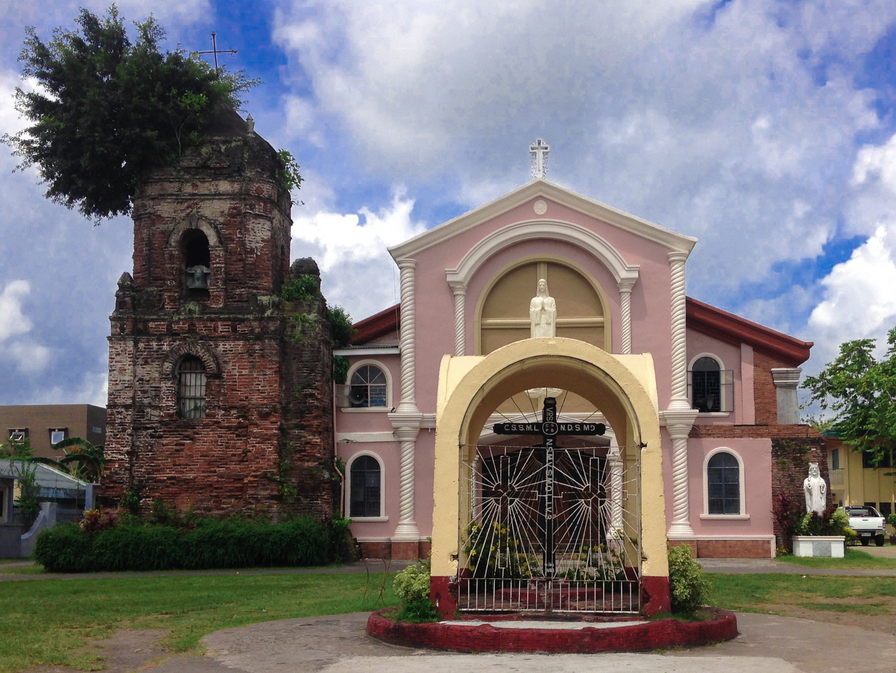

Canaman

Be Part of Us!
Get the latest news and updates. Support Local!
Join Us Now
History of Canaman
Spanish colonization in Canaman began around the 1580s when some Nueva Caceres-based missionaries apparently on their way back from gospel work in either the visita of Quipayo (now Calabanga) or San Gabriel (now a barangay of Pamplona), got their bearings confused and, thinking they were turning eastward from the Bicol River to its Naga tributary, instead entered the Canaman creek which at the time was still a deep and fast flowing stream. They continued paddling until they ended up at a native settlement in what is now the barangay of Poro. In June 1583, the place was organized into a parish, administered by Fray Pedro Matias de Andrade, a Franciscan who later became the fifth Bishop of Diocese of Caceres. In the 1590s, its church was constructed, which was rebuilt in 1669.[5] The patron saint at that time was San Roque, whose image, said to have come all the way from Spain was met at its arrival by the people of Canaman in the shores of Pasacao.
{kind=link}